NO ES MAGIA, ES DISEÑO.

![Fotoproducto de una cartuchera de cuero marrón oscuro visto desde su lateral mas angosto, posicionado en la mitad derecha de la imagen. Tiene costuras claras a la vista, una cremallera negra, y una etiqueta de cuero donde esta grabado el logo de la marca BiMoz (un hexágono negro con perímetro interlineado). En la mitad derecha de la fotografía, el logo de la marca BiMoz en blanco con opacidad en la letra y en el logo. El fondo de la imagen es una pared pintada de verde, con textura pastoza, similar a la de un enduído.](../assets/img/cuero_02_cartuchera_fondo_verde.webp)
CUEROS
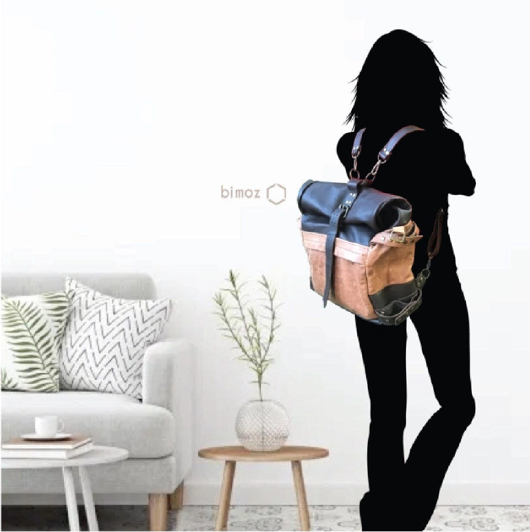 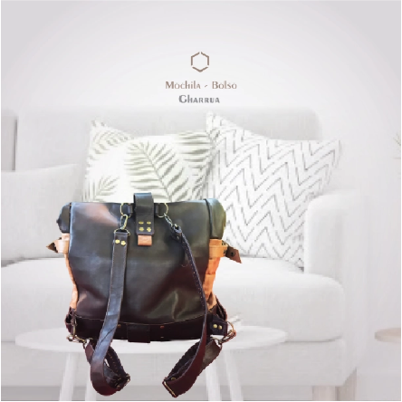 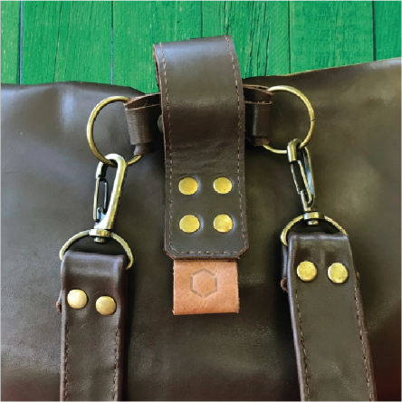![Fotoproducto de una cartuchera de cuero marrón claro desde 3 vistas. La primera, ubicada en la parte superior de la imagen con un tamaño un poco mayor, muestra un lateral angosto donde se observa el final de una cremallera negra y la etiqueta de cuero del producto con el logo de la mara BiMoz. La segunda vista, ubicada en la parte inferior izquierda de la imagen, muestra el largo de la cartuchera desde más arriba. Y la última vista es similar a la primera vista, pero del lado opuesto, dejando ver una tira de cuero que une los laterales de la cartuchera. Estas tres vistas estan ubicadas sobre un fondo blanco texturizado, similar a enduído. Y en la parte superior de la imagen se lee el logo de la marca BiMoz en tonos marrones claros.](../assets/img/cuero_07_cartuchera_3vistas_01.webp)
![Fotoproducto de una cartuchera de cuero marrón claro con detalles en cuero negro desde 3 vistas. La primera, ubicada en la parte superior de la imagen con un tamaño un poco mayor, muestra un lateral angosto donde se observa el final de una cremallera negra y la etiqueta de cuero del producto con el logo de la mara BiMoz. La segunda vista muestra un lateral del producto, con un dibujo en transparencia que representa las tiras de cuero que se pueden agregar para transformar la cartuchera en una riñonera. La última vista, ubicada a una altura intermedia de las otras dos vistas, es la misma cartuchera, pero del otro lateral largo. Estas tres vistas estan ubicadas sobre un fondo blanco texturizado, similar a enduído. Y en la parte superior de la imagen se lee el logo de la marca BiMoz en tonos marrones claros. En la esquina superior derecha se lee la leyenda: NECESER - RIÑONERA 100% Cuero legítimo, 100% Hecho a mano.](../assets/img/cuero_08_cartuchera_3vistas_02.webp)
![Fotoproducto de una cartuchera de cuero marrón oscuro desde 3 vistas. La primera, ubicada en la parte superior de la imagen con un tamaño un poco mayor, muestra un lateral angosto donde se observa el final de una cremallera negra, dejando ver una tira de cuero que une los laterales de la cartuchera. La segunda vista muestra un lateral del producto, con un dibujo en transparencia que representa las tiras de cuero que se pueden agregar para transformar la cartuchera en una riñonera. Y la última vista es similar a la segunda vista, pero del lado opuesto, dejando ver una etiqueta de cuero con el logo de la marca BiMoz. Estas tres vistas estan ubicadas sobre un fondo blanco texturizado, similar a enduído. Y en la parte superior de la imagen se lee el logo de la marca BiMoz en tonos marrones claros. En la esquina superior derecha se lee la leyenda: NECESER - RIÑONERA 100% Cuero legítimo, 100% Hecho a mano.](../assets/img/cuero_09_cartuchera_3vistas_03.webp)
Inicié esta línea de productos en el año 2019. Mi objetivo era fusionar la tradición del trabajo artesanal en cuero con un enfoque moderno y fresco. Quería crear productos que fueran tanto funcionales como estéticamente impactantes.
Cada cartera y mochila, cada riñonera y cartuchera fue cuidadosamente confeccionada a mano. Desde el corte del cuero hasta el cosido final, cada paso se realiza con atención al detalle y amor por el diseño.
El enfoque principal de esta línea es la versatilidad y practicidad de cada producto. Hasta hoy en día, sigo en generación constante de nuevas piezas que formen parte de esta línea.

![La imagen muestra un análisis de producto de un cartel de estación de servicio móvil con la indicación de prohibido fumar. Contiene una base redonda de metal plateado, y de su centro sale un palo del mismo material que en su tope se transforma en el perimetro de un rectángulo. Allí se encastran los carteles, pero en la imágen los carteles están separados, pero en el mismo ángulo, para mostrar la idea del producto. Debajo de la base redonda, se muestra como un aro de metal. Del aro de metal, como del palo que sale de la base del cartel, como de los carteles de prohibido fumar, salen lineas negras que conectan a 3 grandes rectángulos con información en detalle de cada pieza del producto.](../assets/img/ypf_04_guarda.webp)
![La imagen representa un render de un depósito de gasolina hecho con metales plateados con detalles en azul. Contiene 4 surtidores con cables negros largos que cuelgan de la parte superior del dispenser. En el borde izquierdo del depósito, una serie de carteles en gris con indicaciones sobre lo permitido y prohibido en la estación. En el borde derecho, un único cartel con un expositor de botellas de gasoil. Y en el lateral izquierdo, un cartel incrustado en el cuerpo del deposito, con la leyenda 'EURO'.](../assets/img/ypf_05_render_deposito_nafta.webp) 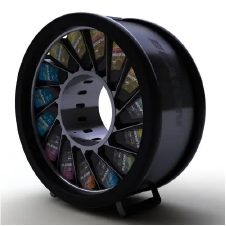
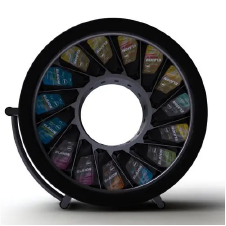
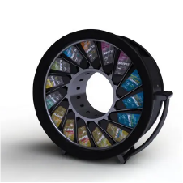
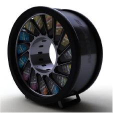
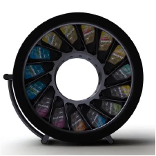
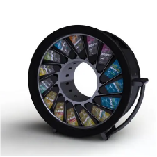
YPF
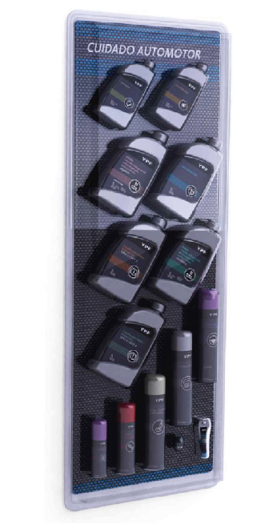 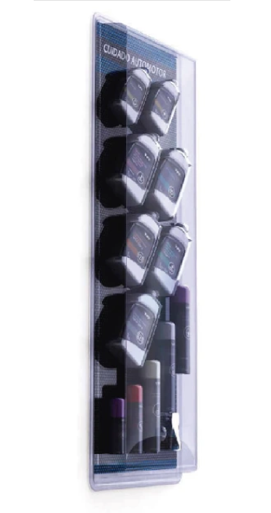
![Renderizado de una estación de servicio YPF. En primer plano, unos depósitos de nafta rectangulares plateados con detalles en azul y cuatro dispensadores con mangeras negras que salen del techo de los depósitos. Detrás del primer surtidor, un auto gris que carga nafta. Las columnas que se encuentran al lado de los depositos son delgadas, blancas y con una inclinación recta en su parte superior. En el fondo, un edificio con ventanales de vidrio grandes unidos entre si, con forma de rombos. En el extremo derecho, un arbol blanco, y tres personas a lo lejos paradas.](../assets/img/ypf_13_estacion03.jpg)
Como diseñadora, formar parte en el año 2010 del equipo la creación de la estética integral de YPF en Argentina ha sido una experiencia increíblemente gratificante y desafiante. Desde el primer día, nos propusimos no solo renovar la imagen de las estaciones, sino también crear un ambiente que reflejara la modernidad y la calidad que caracterizan a la marca.
Desde la renovación del diseño de los carteles que identificarían las estaciones de servicio, hasta el desarrollo de los dispensadores de nafta, pensamos en un diseño innovador y funcional, que integrara las mayores medidas de seguridad en conjunto con una estética armoniosa.
Desde la concepción de la idea, hasta la producción y colocación final, tuve la fortuna de formar parte activamente. Cada paso del camino ha sido emocionante, y estoy orgullosa de haber participado de este proyecto de forma integral.
![Renderizado de una estación de servicio moderna desde una vista lateral. A la izquierda, un auto gris estacionado bajo un techo flotante blanco sostenido por dos columnas finas blancas. Detras de las columnas, un edificio con ventanales en forma de rombo que cubren toda la pared. En el fondo se ven algunas personas caminando por la estación. En el medio de la fotografía, la entrada al edificio con un cartel redondo naranja y luminoso por encima de la puerta con la leyenda 'full'. Y en el lateral izquierdo, algunos autos estacionados y otro techo blanco con detalles en celeste y columnas blancas que lo sostienen que cubre una serie de dispensadores de gasolina.](../assets/img/ypf_14_estacion04.jpg)
![La imagen es una renderización de un dispensador de gasoil con vista desde el frente. Un auto gris sin patente se ubica del lado derecho de esta. El dispensador contiene una pantalla con publicidad en el medio, y debajo de esta una serie de cajones y ranuras, todos en tonos grises. En el lateral izquierdo del depósito, una sección con una computadora y algunos surtidores. El auto se encuentra por encima de una rampa negra, con fricción en su superficie y una especie de vereda elevada que sirve como guía.](../assets/img/ypf_15_dispenador01.webp)
![La imagen es una renderización de un dispensador de gasoil con vista desde la parte lateral trasera. Un auto gris sin patente se ubica del lado derecho de esta. El dispensador contiene una pantalla con publicidad en el medio, y debajo de esta una serie de cajones y ranuras, todos en tonos grises. En el lateral izquierdo del depósito, una sección con una computadora y algunos surtidores. El auto se encuentra por encima de una rampa negra, con fricción en su superficie y una especie de vereda elevada que sirve como guía.](../assets/img/ypf_16_dispensador02.webp)
![La imagen es la renderización de 3 carteles de una estación de servicio. El primer cartel, ubicado en el lateral izquierdo, contiene un marco de metal con números blancos sobre un fondo negro, en información en franjas grises en la parte inferior. El cartel se sostiene por una base negra de metal, y tiene una carcasa azul en su parte trasera. El segundo cartel, ubicado en el centro de la imagen, es similar al primer cartel, pero es más alto, y con una extensión en su parte superior de color azul que incluye información como tipos de nafta, y un cartel naranja con la leyenda 'Full'. El ultimo cartel, es una version más pequeña de los otros dos carteles, que en su parte superior contiene una franja naranja con la leyenda 'GNC', y en el fondo negro contiene una única línea de información con un único precio. Los tres carteles se posicionan sobre un fondo blanco.](../assets/img/ypf_17_carteles.webp)
RECICLAJE
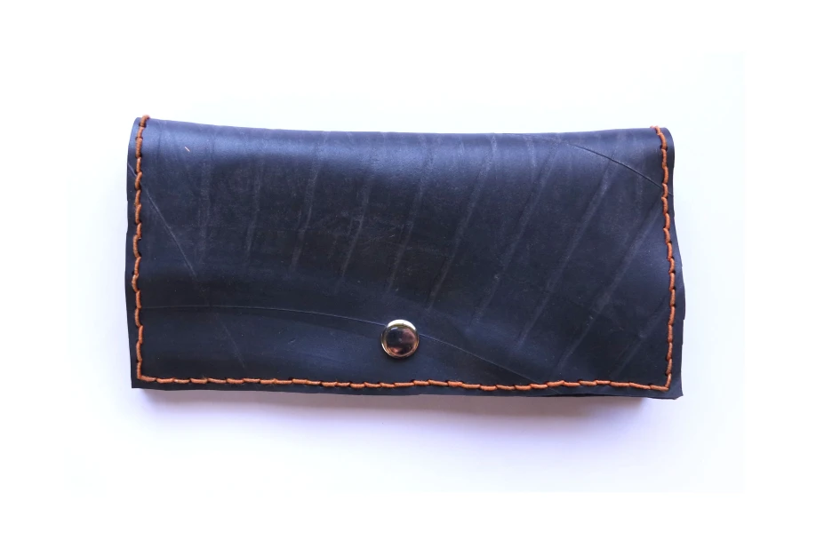 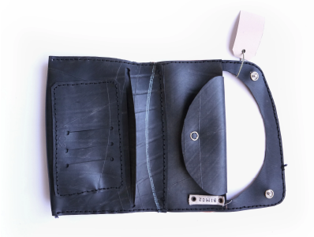 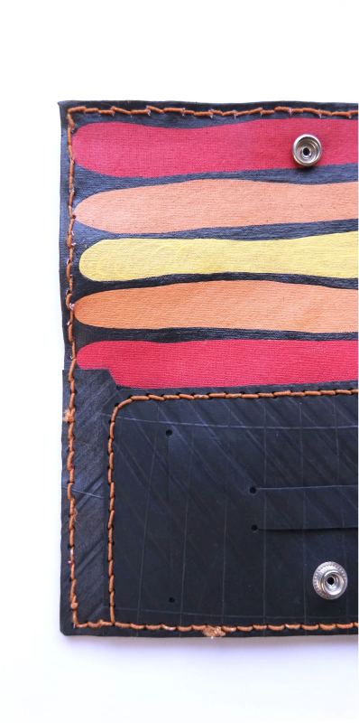La cantidad de residuos que generamos y los desperdicios que tardan millones de años en degradarse es inmensa. Con los años de desarrollo profesional, traté de dar siempre el mejor enfoque desde una perspectiva de reciclaje. Y el caucho fue un descubrimiento enorme como tipo de material para la realización de productos.
Este material no solo es duradero y resistente al agua, sino que también ayuda a reducir la cantidad de desechos plásticos en el medio ambiente, ¡una verdadera victoria para la sostenibilidad! Grandes empresas de neumáticos y de automovilismo tiran millones de recortes y desechos de caucho fallado, dando a nosotros la oportunidad de poder ser reutilizados.
Con esta línea de productos, no sólo busqué generar una mayor vida útil para un elemento de dificil reciclaje, sino que además genere un diseño de gran versatilidad, donde un mismo elemento puede tener múltiples funciones: una cartera que funciona como riñonera o billetera. Mi toque personal: pintura que da color al material y forma parte de su estética.
![Una fotografía frontal de un estuche de lentes hecho con neumático reciclado. La textura del estuche es rugosa y opaca y las costuras están hechas a mano. La parte principal del estuche tiene distintas inscripciones color amarillo desgastado: 'RUTYL TUBE', 'TYRE', 'FR14', 'TR 13'. La solapa del estuche tiene un corte ovalado en la parte superior al interior de su interior, asegurando los lentes solo con las tiras exteriores. La solapa se une al cuerpo a través de unos botones dorados, pero huecos, similares a unos finos aros dorados. En la tira izquierda de la solapa, se adosa la etiqueta, unida con una fina cuerda, la etiqueta es una fotografía sepia de una típica pareja que baila tango, la fotografía parece ser de los años 1940 o 1950.](../assets/img/reciclaje_09_estuche.webp)
![Una fotografía de una billetera abierta hecha con neumático tratado, de textura un poco opaca. Las costuras están hechas a mano. Posee una especie de tarjetero hecho por 4 cortes rectos y prolijos, con terminaciones de 2 perforaciones bien redondeadas. Hacia el otro lado se aprecia la etiqueta de la marca BiMoz, cocida sobre el producto. La etiqueta tiene dos orificios metálicos: en el orificio inferior hay una pequeña cuerda que une a otra etiqueta rectangular de papel. Esta última muestra una fotografía sepia de un hombre con lentes con los brazos cruzados, que parece ser de los años 1940 o 1950.](../assets/img/reciclaje_10_billetera.webp) 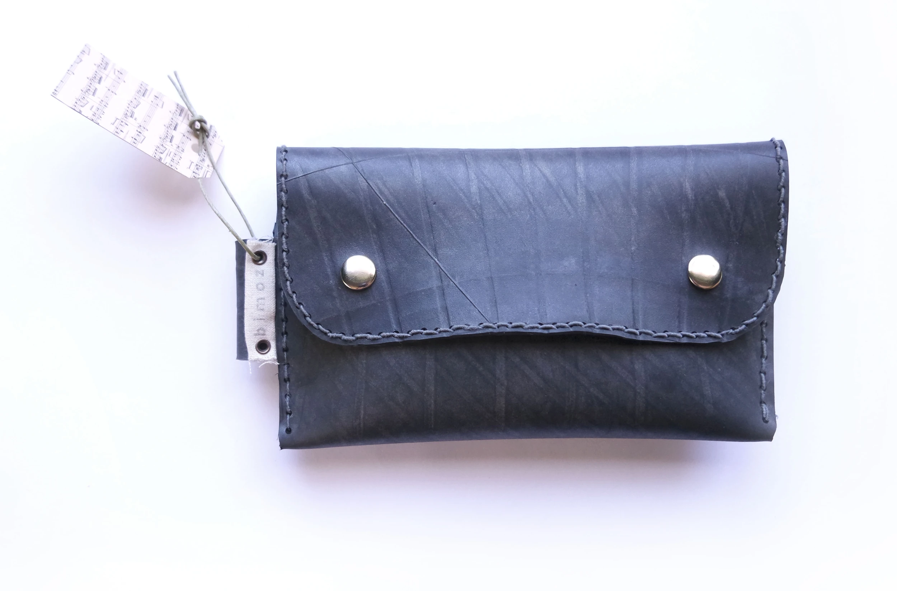
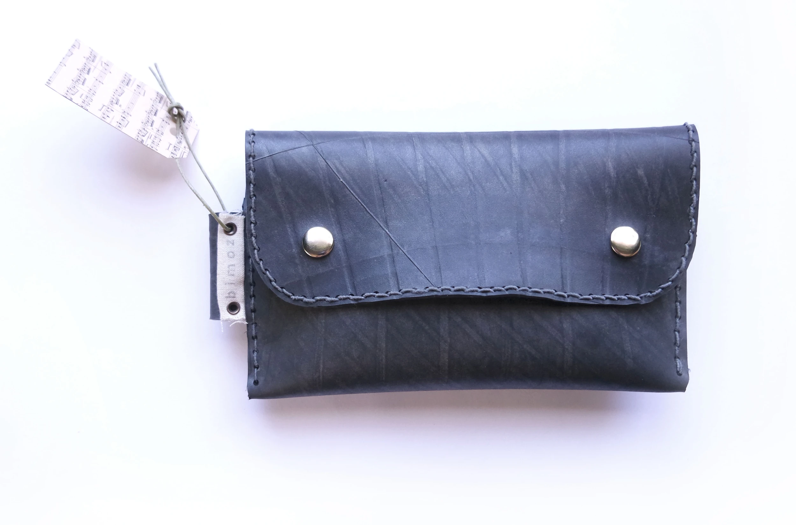
![La imagen muestra sobre un fondo blanco a una billetera color negro hecha de neumático tratado. Se aprecian las costuras a la vista y la textura suave y brillante del producto. La billetera es color negro y tiene una franja decorativa en el centro cocida con detalles que consisten de cuatro líneas finas cocidas color gris claro que corren paralelas a lo largo de la billetera, y distintas líneas diagonales que corren desde una esquina y se van desvaneciendo hacia el centro de la billetera, con tonos blancos, grises y negros.](../assets/img/reciclaje_12_estuche.webp) 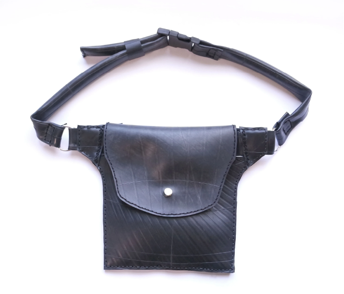
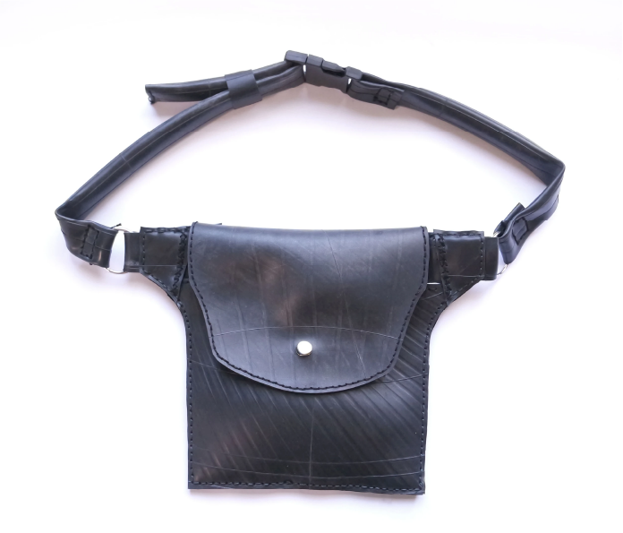